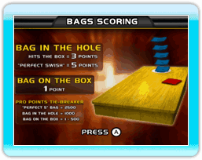
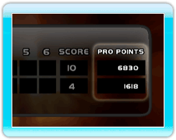
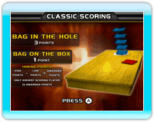

13 |
Pointage |
 |
Target Toss Pro : le jeu emploie les règles traditionnelles du véritable jeu de « sacs » ou « Cornhole » pour compter les points, mais avec une différence. L'ojectif est d'obtenir le plus de points possible en lançant des sacs sur la boîte ou dans le trou tout en empêchant son opposant d'en faire le même.  Chaque joueur peut lancer le sac 4 fois par manche, et le jeu comporte 6 manches. Le gagnant est celui qui a remporté le plus de points à la fin.
 Pour le jeu décisif, des « Pro Points » sont décernés en mesurant la distance de chaque sac au trou, en assignant une valeur de points, et en ajoutant tous ces points. Dans le cas d’égalité, le jeu se servira des Pro Points pour décider du gagnant. Remarque : Les pro points ne sont utilisés que dans le pointage du jeu de « Sacs ».  Le « Cornhole » classique oppose deux équipes ou deux joueurs l’un contre l’autre au cours d’autant de manches qu’il faut pour qu’un des joueurs atteigne 21 (ou un autre chiffre prédéterminé).
|
 |
 |
 |